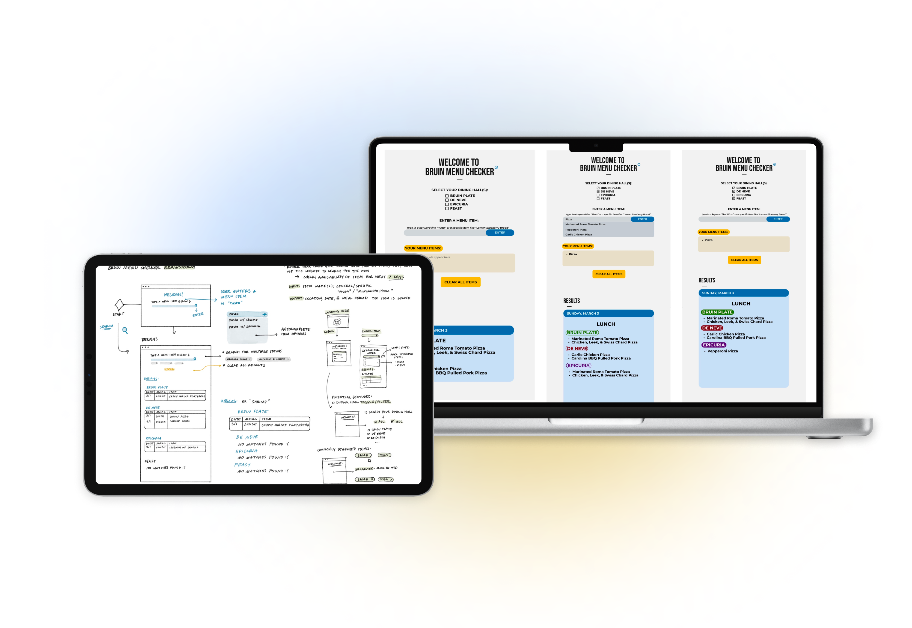
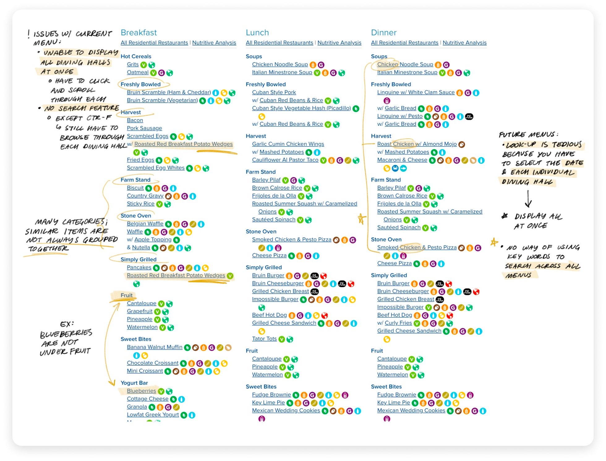
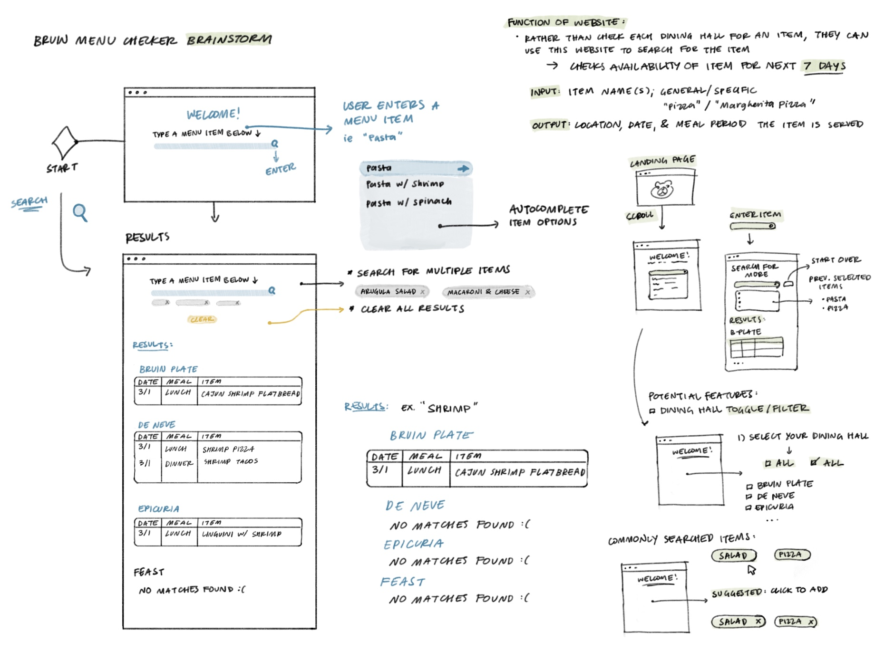
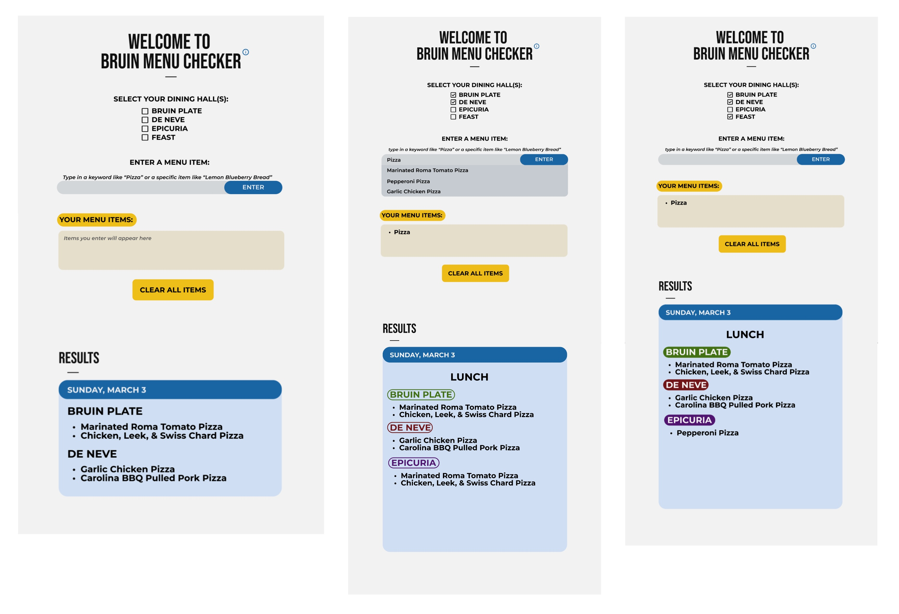
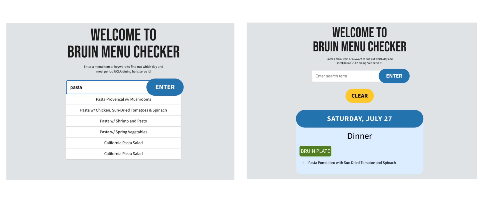

Bruin Menu Checker
🔍 UCLA Dining Hall Explorer
Designed and developed within 12 hours during ACM Hack's HOTH XI.
💡 Description
Bruin Menu Checker is a website that utilizes a web scraping API to detect and display specific food items on UCLA's daily menus. Developed using React, HTML, CSS, and JavaScript, this project streamlines the process of finding favorite foods on campus, providing a user-friendly interface for students to quickly search and discover menu options.
❗️The Task
🔧 The Problem:
The UCLA dining menu website has limitations that hinder quick access to information.
- ✖️ Users can't view all dining hall menus at once
- ✖️ There's no unified search across menus
- ✖️ Tedious to look through future menus
- ✖️ Similar foods aren't always grouped together
🌟 The Challenge:
Design a solution for students to easily search for favorite dishes and see when and where they'll be served in the upcoming week.
✍ My Design Process
I began by brainstorming basic functionalities and the general user flow of the website, sketching potential layouts and focusing on making the website intuitive and user-friendly. Given the short timeframe of the hackathon, we had to utilize past conversations with other students about searching for menu items rather than conducting user research. I sought to gain a thorough understanding of the needs of the website's future users (such as the usefulness of searching for one specific item as well as more general items) and how to make their lives easier when it comes to deciding where to eat on the Hill.
I aimed to reduce cognitive load by maintaining a simple interface, with the search bar and results all contained within one page. This would allow ease of navigation for users and make additional selections easier. Upon further discussion of necessary features and how feasible it was to implement them, I drafted a rough draft and moved on to wireframing using Figma.
🗒️ Prototype
Referencing my sketches, I designed a prototype of the website using Figma and created multiple mockups to test out color palettes. I created a styling sheet containing elements (such as fonts, colors, and icons) we needed to translate to code.
💻⚡ Final Website
Using HTML and CSS, we translated UI components into code to build the final project. We decided to omit the option of filtering dining halls and opted instead to display results from all dining halls featured on UCLA's dining hall menu page. The final result: a straightforward, fully functional website where users can search for their favorite dishes (or discover new ones!).
Thanks for reading!
Back to Home